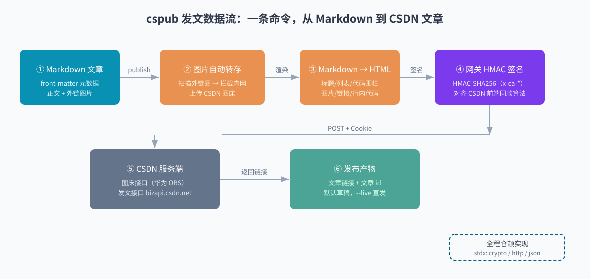
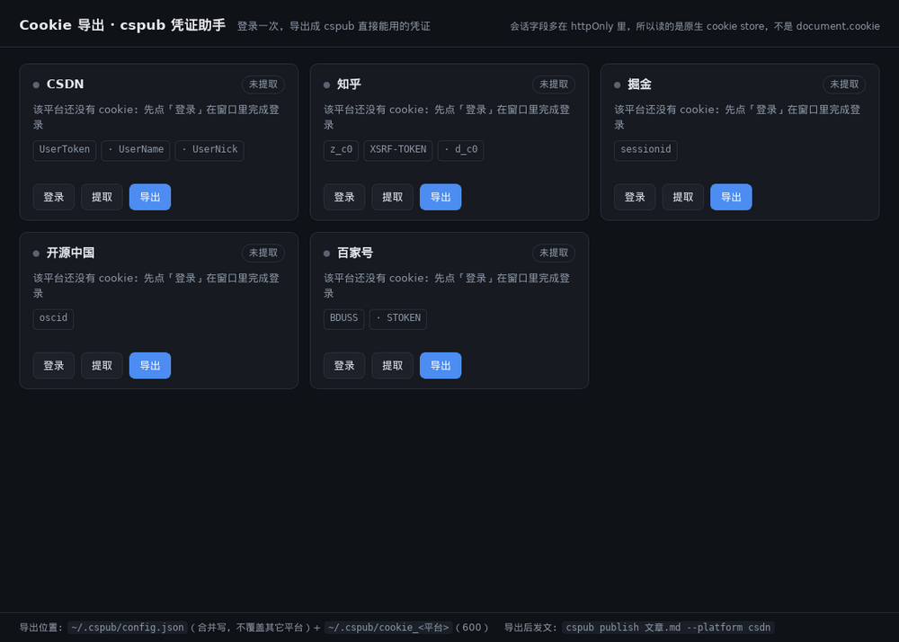

零第三方依赖
HMAC-SHA256 签名、Base64、HTTP、JSON 全走仓颉标准库与 stdx，静态编译成单文件。 只有百家号 Cookie 通道需要 Playwright 伴生脚本，其余平台不需要 Python、不需要浏览器。
你只写带 front-matter 的 Markdown。剩下的它来做：渲染成各平台要的 HTML、 按平台把图片转到对的图床、算好签名、发成草稿，最后回显文章 id。 主链路零第三方依赖，一条命令，一个平台。
网关签名 + Cookie；外链图强制转自家图床（防盗链）。改文用 --update
专栏草稿三步流；知乎会剥离站外图，图片先转知乎 CDN
接受外链图：本地图直传 AtomGit 仓库当图床，不依赖浏览器
直通站点接口，用其自带图床（oscimg），提交 Markdown 由服务端渲染
官方 token 通道，或 Cookie 走 Playwright 浏览器自动化填表
官方 MetaWeblog API，纯 HTTP 无 Cookie，令牌即身份
编辑器同款 RPC column/article，纯 Cookie 零签名；--draft 真存草稿并回显 draftId，标签与已加入的专栏必填
官方 OpenAPI v2 + X-Auth-Token，Markdown 原样提交；--draft 建成 public=0 私密文档
模拟后台 mp/agw 接口 + X-CSRFToken；正文图片必须全转头条 CDN，否则整篇 7115 拒稿
/gateway 网关 + 写文章页实时取的 Token（与 Bearer 双头同值）；--draft 与 --live 是两条不同端点
所以它在这两件事上刻意保守：默认不出手，出手前先把图落到不会失效的地方。
HMAC-SHA256 签名、Base64、HTTP、JSON 全走仓颉标准库与 stdx，静态编译成单文件。 只有百家号 Cookie 通道需要 Playwright 伴生脚本，其余平台不需要 Python、不需要浏览器。
publish 不带参数就是存草稿，手滑不会直接上线；确认没问题再加
--live。已发布的文章用 --update <id> 原地更新，
不会在平台堆出一串重复稿。
CSDN 站外图有防盗链（直连回 200 + 0 字节的空图），知乎会剥掉站外图。 发文前自动按平台转存，并拦下内网/回环地址、拒绝 30x 重定向、单张限 12 MiB。
每一环都可以单独预演：cspub check 只解析、cspub html 只渲染、cspub imgs 只预判图片去向，都不联网。

title / tags / categories / desc / draft，缺 desc 就从正文剥掉标记取前 200 字（按 UTF-8 字节判界，不切半个汉字）。
代码围栏内的图片引用跳过；已是目标图床的直接放行；单张失败保留原链接并提示，不阻断发文。
各平台编辑器要的是渲染结果，不是 Markdown 源文。内置渲染器覆盖标题/段落/列表/引用/围栏代码/图片/链接/行内代码/加粗。
CSDN 走阿里云网关风格 HMAC 签名的 x-ca-* 头；知乎/掘金/开源中国/腾讯云/头条号用登录 Cookie（头条另带 X-CSRFToken）；博客园用 MetaWeblog 令牌；语雀用 OpenAPI Token；SegmentFault 用 Cookie + 发文时实时取的 Token。
默认 draft，加 --live 才真发；错误码原样回显，不替你猜。
拿到 article id 才算成功，同时打印后续发布 / 更新该文的命令，可直接复制。
外链图是文章最常见的慢性死法：源站改防盗链、图床停服、或者平台直接把站外图剥掉。所以图片处理按平台分几套策略：必须转平台图床的、接受外链的、直接用平台自带图床的。
# 只扫描不联网，预判每张图的去向 图 1 rehost raw.githubusercontent.com/a.png → 转 CSDN 图床 图 2 skip i-blog.csdnimg.cn/direct/... → 已是目标图床 图 3 BLOCKED http://192.168.1.9/logo.png → 内网地址，拦截
图床签名响应里 customParam.isAudit 是 JSON 数字。用只认字符串的取值函数去取，会得到空串；
把空的 x:isAudit 发给华为 OBS，OBS 回的是 HTTP 200 + 0 字节——
看起来像"被网关吞了"，实际是回调拿不到字段。改法是按 JSON 类型分派取值。
签名接口 + 华为 OBS multipart + 回调，最终回写 i-blog.csdnimg.cn 直链。实测一篇两图 2/2 成功。
掘金接受外链图。本地图直传 AtomGit 仓库、正文嵌 raw 直链，整条图片链路不再依赖 Playwright。
一个 multipart 请求就够，2 MB 单请求实测通过；失败的本地图再用 AtomGit 外链兜底。
知乎会剥离站外图，所以图片提交前先转存到知乎 CDN，正文引用同步回写。
头条是唯一「外链也强制转存」的平台：正文里任何非头条域名图片，整篇回 7115 图片uri非法。转存失败会先告警，不静默照发。
只给图片 url 就来换直链，回 developer.qcloudimg.com；已是腾讯云域名的图不重复转。
真正起作用的字段——知乎 z_c0、掘金 sessionid、
CSDN UserToken——多半是 httpOnly，
document.cookie 读不到，手抄还容易漏字段。
配套的桌面小工具 cookie-export 把这件事做成点三下：内嵌浏览器登录一次，
导出直接写进 ~/.cspub/config.json（合并写、600 权限）。
它和 cspub 是同一套壳工程下的两个仓库，全部本机运行，不上报任何 cookie。
点平台卡片的「登录」，在内嵌窗口里正常登录——共享原生 cookie store，httpOnly 字段也在里面。
按 cspub 各平台的字段硬需求逐项校验，缺哪个直接点出来，例如 已提取，但缺必需字段：UserToken。
写 ~/.cspub/config.json 并同时落一份 ~/.cspub/cookie_<平台> 文本，cspub 直接可用。

博客园走 MetaWeblog 令牌（不是 cookie），后台「设置 → 允许博客客户端访问」生成即可，无需工具。
需要仓颉 SDK（构建用）与平台自己的登录凭证或令牌。构建产物是单个可执行文件，拷到别的机器也能跑。
环境变量对同机其他进程可见（/proc/<pid>/environ），共享机器建议用 config.json + chmod 600。
# Cookie 整串含空格与分号，写 profile 时用单引号包裹 export CSPUB_CSDN_COOKIE='<浏览器 F12 复制的 Cookie 整串>' export CSPUB_ZHIHU_COOKIE='<须含 z_c0 与 XSRF-TOKEN>' export CSPUB_JUEJIN_COOKIE='<须含 sessionid>' # 或者写进配置文件（合并写，600 权限） # {"csdnCookie": "...", "zhihuCookie": "..."}
cspub whoami 校验凭证是否就位（只验格式、不联网）；Cookie 过期时发文会提示重取。
只有 title 必填；draft 缺省为 true，正文照常写 Markdown。
--- title: 用仓颉写一个多平台发文 CLI tags: 仓颉, 工具 # 逗号/顿号分隔，最多 5 个 categories: 编程 desc: 摘要一行 # 缺省从正文剥标记取前 200 字 draft: true # --live 可覆盖 --- ## 正文 这里照常写 Markdown，图片用  引用即可。
先自检：cspub check 文章.md 解析统计 · cspub html 文章.md 目验渲染结果 · cspub imgs 文章.md 预判每张图去向。
不加参数就是草稿。确认文章没问题，再 --live；已发布的用 --update 改。
cspub publish 我的文章.md --platform csdn # 存草稿 cspub publish 我的文章.md --platform zhihu cspub publish 我的文章.md --platform juejin cspub publish 我的文章.md --platform oschina cspub publish 我的文章.md --platform baijiahao cspub publish 我的文章.md --platform cnblogs cspub publish 我的文章.md --platform tencent cspub publish 我的文章.md --platform yuque cspub publish 我的文章.md --platform toutiao cspub publish 我的文章.md --platform segmentfault cspub publish 我的文章.md --live # 直接发布 cspub publish 我的文章.md --update 159873342 # 原地更新（CSDN）
排障时设 CSPUB_DEBUG=1，往 stderr 打图床与发文链路的诊断行；TLS 报未知 CA 时先确认系统 curl 是否也失败，再考虑 --insecure（TrustAll，自担风险）。
仓颉 1.2.0 + 配套 stdx。产物在 target/release/bin/main。
export CANGJIE_STDX=<stdx>/dynamic/stdx export PATH=$CANGJIE_HOME/bin:$CANGJIE_HOME/tools/bin:$PATH cjpm build # 本地运行（缺 .so 时补 LD_LIBRARY_PATH） ./target/release/bin/main help # Windows 交叉编译：exe + 自包含 zip ./scripts/winbuild.sh
发布产物含 tar.gz 与 SHA256SUMS，见仓库 docs/发布与版本维护.md。
字段少是刻意的——只保留各平台都认的那几个，平台私有参数走环境变量或命令行开关。
| 字段 | 说明 |
|---|---|
| title | 必填，文章标题 |
| tags | 逗号或顿号分隔，最多 5 个（接口上限） |
| categories | 分类名；开源中国按名字匹配，匹配不到取账号第一个分类 |
| desc | 摘要；缺省从正文剥掉标记取前 200 字（按 UTF-8 字节判界） |
| draft | 缺省 true；命令行 --live 覆盖 |
| origin_url | 原文地址，百家号必填 |
cspub check <文章.md> # 解析 + 渲染统计，不联网 cspub html <文章.md> # 打印渲染后的 HTML cspub imgs <文章.md> # 预演图片处理（rehost/skip/BLOCKED） cspub publish <文章.md> # 发草稿（默认） cspub whoami [platform] # 校验凭证格式 cspub help
仓库的 change log 有条硬规矩：每条变更带验证证据（实测输出、错误码、转存结果），不写没有证据的条目。所以这里也只放跑过的数字。
CSDN 每日 1 篇额度：额度用满时接口回 400300012，存草稿（400300001）同样被拒。这不是工具问题，换自然日或换账号。
Markdown 扩展不渲染：表格 / 脚注 / 任务列表原样落进段落。发之前用 cspub html 目验。
更新只管 CSDN：--update <id> 目前仅 CSDN 支持，其他平台需在后台改。
开源中国：发布 ≠ 立刻公开：接口回 id 后新号/首篇常走人工审核，公开页可能还是「找不到页面」。判可见性只能看浏览器渲染。
CSDN 证书链：根是 Certum（小众 CA），stdx TLS 报 unknown CA 而系统 curl 能过；--insecure（TrustAll）是逃生口，风险自担。
Windows 发文未真机实测：交叉编译产物（exe + 自包含 zip）能跑，发文链路只在 Linux 上验过。
大多数平台没有可直接创建文章的开放 API，能发的是「编辑器同款内部接口」——CSDN 是阿里云网关风格的 HMAC 签名，知乎/掘金/开源中国/腾讯云/头条号凭登录 Cookie（头条另带 X-CSRFToken），SegmentFault 走它前端的 /gateway 网关，博客园恰好有官方 MetaWeblog 接口，语雀有官方 OpenAPI v2。
因此每个平台一条独立适配通道，各自的鉴权、图片、字段约定都不同；这也决定了它不可能是一个「统一 API 客户端」。
只发给对应平台自己的域名。cspub 没有统计、没有回调、没有中间服务器；凭证来源是环境变量或本机 ~/.cspub/config.json（600 权限）。
默认 best-effort：失败的那张保留原链接、正文照发、同时打醒目告警。想让「仍有本地图残留」直接中止发布，设 CSPUB_STRICT_IMAGES=1。
命令是「一条命令一个平台」，明确、可回滚。批量就是脚本里循环几条 cspub publish，各平台返回各自的 id，互不影响。
真实场景练手：一条「HTTP 客户端 + HMAC 签名 + JSON」链路，仓颉 stdx 恰好齐活，不用装任何第三方包。实现中的坑（HMAC 逐字节对账、TLS 信任、UTF-8 字节语义、struct 可变性）都写进了仓库的踩坑文档，对写仓颉网络程序有直接参考价值。
换机器：产物是静态单文件，带上 ~/.cspub/config.json 即可（缺 .so 时补 LD_LIBRARY_PATH）。换账号：环境变量优先于配置文件，临时 export 一串新 Cookie 就能切号，不必改文件。